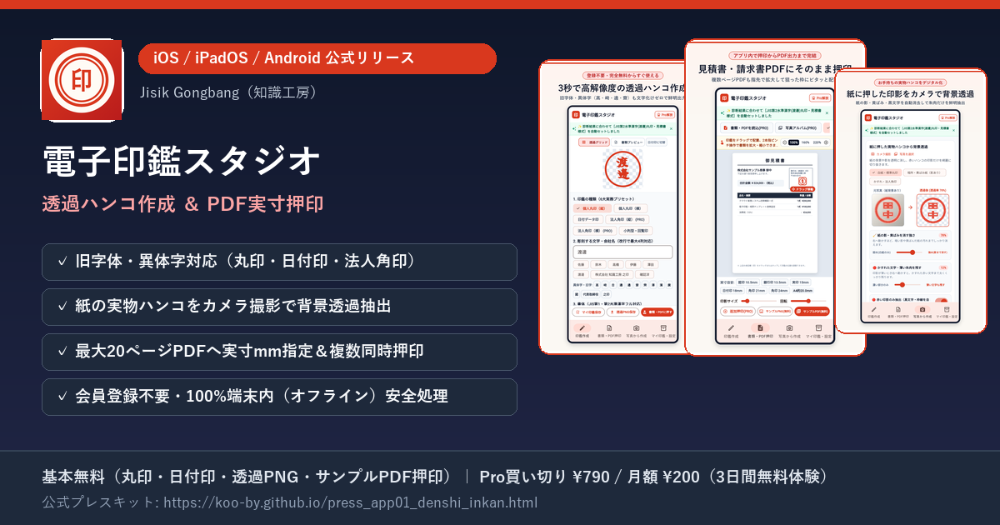

電子印鑑スタジオ - 透過ハンコ作成＆PDF押印
전자도장 스튜디오 - 투명 도장 제작 & PDF 날인 (電子印鑑スタジオ)
サブタイトル：異体字・角印・日付印も完全オフラインで即出力（iOS / iPadOS / Android対応）
부제목: 이체자·법인 직인·날짜 도장도 완전 오프라인 즉시 출력 (iOS / iPadOS / Android 지원)
1. 旧字体・異体字（髙・﨑・邊・齋など）に完全対応した個人丸印・日付データ印・法人角印を3秒で作成し、300DPI相当の背景透過PNGで即座に出力。
2. 白い紙に押した実物の印鑑をカメラで撮影して背景だけを透明化（Alpha=0）するスキャン抽出機能と、最大20ページのPDF書類へ実寸mm指定（10.5mm/15mm/21mm等）で直接押印できる機能を1つのアプリに統合。
3. 会員登録不要・100%端末内（完全オフライン）処理のため、社外秘の見積書・請求書・稟議書PDFも外部サーバーへ一切送信されず安全に完結。
1. 구자체·이체자(髙·﨑·邊·齋 등)를 완벽 지원하는 개인 원형인·날짜 데이터인·법인 각인을 3초 만에 제작하고 300DPI급 투명 배경 PNG로 즉시 출력.
2. 흰 종이에 찍은 실물 도장을 카메라로 촬영해 종이 그림자만 지우고 인주만 투명 추출(Alpha=0)하는 스캔 기능과, 최대 20페이지 PDF 서류에 실측 mm 규격(10.5mm/15mm/21mm 등)으로 직접 날인하는 기능을 앱 하나로 통합.
3. 회원가입 불필요·100% 기기 내(완전 오프라인) 처리 아키텍처로 대외비 견적서·청구서·품의서 PDF가 외부 서버로 일절 전송되지 않아 보안 걱정 없이 완결.


開発背景と4つの主要機能（従来の電子印鑑アプリの課題を解決）
개발 배경 및 4대 핵심 차별점 (기존 전자도장 앱의 고질적 불만 해결)
従来の電子印鑑アプリにおける「旧字体が文字化けする」「紙のハンコ写真の背景が綺麗に消えない」「印鑑画像を作ってもPDFに実寸で押す方法が分からない」「社外秘の請求書を外部クラウドにアップロードしたくない」という4大課題を解決するために開発されました。
기존 일본 전자도장 앱 사용자들이 가장 많이 호소하던 '구자체 한자 깨짐', '종이 도장 사진 배경 미제거', '도장 이미지를 만든 후 PDF에 실제 크기로 찍기 어려움', '대외비 서류를 외부 클라우드에 업로드하기 꺼려짐'이라는 4대 페인포인트를 정면으로 해결했습니다.
1. 旧字体・異体字ピッカー＆6書体内蔵
1. 구자체·이체자 입력기 & 6종 서체 내장
「髙橋」「山﨑」「渡邊」「齋藤」など日本の多様な苗字を文字化けなく即座に入力可能。印相体風・篆書体風・古印体風・楷書体・明朝・ゴシックの6書体、朱肉5色、かすれ効果、お辞儀傾き調整に対応。
'髙橋', '山﨑', '渡邊', '齋藤' 등 일본의 다양한 이체자 성씨를 깨짐 없이 즉시 선택 가능. 인상체풍·전서체풍·고인체풍·해서체·명조·고딕 6종 서체와 인주 5색, 인주 번짐(갈필), 인사 기울기 조정 지원.
2. 実物ハンコの写真スキャン透過抽出
2. 실물 도장 사진 스캔 배경 투명화 추출
白い紙に押した実物の丸印や角印をスマホカメラで撮影するだけで、紙の影や照明ムラを除去し、朱肉の輪郭だけを鮮明な背景透過PNG（Alpha=0）として抽出します。
흰 종이에 찍은 실물 원형인이나 회사 직인을 스마트폰 카메라로 촬영하면, 종이 그림자와 조명 얼룩만 깔끔히 지우고 인주 윤곽만 투명 배경 PNG(Alpha=0)로 정밀 추출합니다.
3. 最大20ページPDFへの実寸mm押印
3. 최대 20페이지 PDF 실측 mm 날인
見積書・請求書・社内稟議書の内蔵サンプル3種に加え、お手元のPDF（最大20ページ）を読み込み、認印10.5mm・実印15mm・角印21mm/24mmの実寸比率でドラッグ配置＆複数同時押印が可能です。
견적서·청구서·사내 품의서 내장 양식 3종은 물론, 외부 PDF(최대 20페이지)를 불러와 막도장 10.5mm·실인 15mm·각인 21mm/24mm 실물 비율로 드래그 배치 및 복수 동시 날인이 가능합니다.
4. 登録不要・100%オンデバイス安全処理
4. 회원가입 불필요·100% 기기 내 보안 처리
アカウント登録は一切不要。作成した印影データや読み込んだ取引先PDFは外部サーバーへ送信されず、すべてお使いのスマートフォン・タブレット端末内だけで安全に処理されます。
계정 가입이 일절 필요 없으며, 제작한 도장 이미지나 불러온 거래처 대외비 PDF는 외부 서버로 전송되지 않고 100% 사용자의 스마트폰·태블릿 기기 내부에서만 안전하게 처리됩니다.
アプリ基本情報・スペック一覧（記事掲載用データ）
앱 기본 사양 및 스펙 일람 (기사 등재용 데이터)
| アプリ名称 | 앱 명칭 | 電子印鑑スタジオ - 透過ハンコ作成＆PDF押印 電子印鑑スタジオ - 透過ハンコ作成＆PDF押印 (전자도장 스튜디오 - 투명 도장 제작 & PDF 날인) |
|---|---|---|
| カテゴリ | 카테고리 | ビジネス ／ 仕事効率化（ユーティリティ） 비즈니스 / 생산성 (유틸리티) |
| 対応OS・機種 | 지원 OS 및 기기 | iOS 15.0以降（iPhone / iPad ユニバーサル対応）、Android 7.0以降（スマートフォン / タブレット対応） iOS 15.0 이상 (iPhone / iPad 유니버설 지원), Android 7.0 이상 (스마트폰 / 태블릿 지원) |
| 価格（税込） | 가격 (세금 포함) |
・基本無料（個人丸印・小判印・日付データ印の鮮明モード作成、背景透過PNG保存、内蔵サンプル書類3種への押印出力、マイ印鑑2個保存） ・Pro買い切りプラン：¥790（1回払いで永久利用）／ Pro月額プラン：¥200/月（初回3日間無料トライアル付き） ※Pro解放機能：法人角印（1〜4列）、朱肉かすれ・二重枠保存、外部PDF（最大20ページ）・写真書類への押印出力、1書類への複数同時押印、実物ハンコ写真スキャン透過保存、マイ印鑑無制限保存 · 기본 무료 (개인 원형인·타원형 회람인·날짜 데이터인 선명 모드 제작, 배경 투명 PNG 저장, 내장 샘플 서류 3종 날인 출력, 내 도장 2개 보관) · Pro 평생 소장 플랜: ¥790 (1회 결제로 영구 이용) / Pro 월간 구독: ¥200/월 (최초 3일 무료 체험 포함) ※Pro 해금 기능: 법인 사각인(1~4열), 인주 번짐·이중 테두리 저장, 외부 PDF(최대 20페이지)·사진 서류 날인 출력, 1서류 다중 동시 날인, 실물 도장 사진 스캔 투명 저장, 내 도장 무제한 보관 |
| ストアURL | 공식 스토어 URL |
・App Store (iOS/iPadOS): https://apps.apple.com/jp/app/id6827110841 ・Google Play (Android): https://play.google.com/store/apps/details?id=com.knowledgestudio.japan.app01_denshi_inkan&hl=ja&gl=JP |
| 開発・運営事業者 | 개발 및 운영사업자 | Jisik Gongbang（知識工房 ／ 代表：KOO BONYEOP ／ D-U-N-S® Number：697010594） Jisik Gongbang (지식공방 / 대표: 구본엽 / D-U-N-S® Number: 697010594) |
プレスリリース全文（記事引用・転載フリー）
보도자료 전문 (일본 미디어 기사 인용·전재 프리)
メディア関係者様・ブロガー様は、以下のプレスリリース本文および当ページ内の情報を自由に引用・転載いただけます。
일본 미디어 기자 및 블로거가 별도 문의 없이 즉시 기사에 인용·복사하여 사용할 수 있는 표준 일본어 보도자료 전문입니다.
【プレスリリース】旧字体・実物ハンコ透過スキャン・PDF実寸押印がスマホ1つで完結！完全オフラインの『電子印鑑スタジオ』iOS/Android向けに提供開始 Jisik Gongbang（知識工房、代表：具 本燁）は、会員登録不要・完全端末内（オフライン）処理で安全に電子印鑑の作成からPDF書類への押印までを完結できるモバイルアプリ『電子印鑑スタジオ - 透過ハンコ作成＆PDF押印』（iOS / iPadOS / Android対応）を公開いたしました。 ■ 開発の背景 テレワークや電子請求書の普及に伴い、スマートフォンやタブレットだけで見積書や請求書PDFに押印したいという需要が急増しています。しかし従来の電子印鑑アプリには、「髙・﨑・邊・齋などの旧字体・異体字が文字化けする」「紙に押した社判の写真から背景だけを綺麗に透過できない」「社外秘の取引書類を外部クラウドサーバーにアップロードするのが不安」といった課題がありました。『電子印鑑スタジオ』は、これら日本のビジネス現場の声を反映し、外部通信ゼロの完全オンデバイス処理で開発されました。 ■ 『電子印鑑スタジオ』の4大特長 1. 日本のあらゆる苗字・旧字体・異体字に対応した印鑑作成 個人丸印（認印・三文判）、小判型回覧印、日付データ印（令和/西暦ワンタッチ切替・上下段テキスト自由編集）、法人角印（縦・横1〜4列、之印自動調整）に対応。6書体（印相体風・篆書体風・古印体風・楷書体・明朝・ゴシック）や朱肉5色、リアルな朱肉かすれ効果・お辞儀角度の調整も可能で、300DPI相当の背景透過PNGとして即座に保存できます。 2. 紙に押した実物ハンコの「背景透過スキャン抽出」 白い紙に押した手持ちの印鑑をカメラ撮影またはアルバムから読み込むだけで、紙の影や照明ムラを消去し、朱肉の輪郭だけを残した鮮明な背景透過PNGを生成します。 3. 最大20ページのPDF書類へ実寸mm指定で直接ドラッグ押印 見積書・請求書・社内稟議書のサンプル書類を標準内蔵。さらに手元のPDF書類（最大20ページ一括読込対応）を読み込み、認印10.5mm・実印15mm・角印21mm/24mmの実寸プリセットで狙った枠にピタッと配置できます。1つの書類に「会社角印＋担当者丸印」を同時に押す複数押印にも対応しています。 4. 会員登録不要・100%端末内処理で社外秘書類も安心 作成した印影や読み込んだPDFファイルは外部サーバーへ一切送信されません。すべて端末内で完結するため、機密性の高い業務書類でも安心してご利用いただけます。 ■ 価格とプラン ・無料プラン：個人丸印・小判印・日付データ印の鮮明モード作成、背景透過PNG保存、内蔵サンプル書類3種への単一押印出力、マイ印鑑2個保存がすべて無料。 ・Proプラン：買い切り ¥790（税込・永久ライセンス）または 月額 ¥200（税込・初回3日間無料トライアル付き）で、法人角印、朱肉かすれ・二重枠、外部PDF押印出力、複数同時押印、写真スキャン透過保存、無制限保存が解放されます。 ■ 公式リンク ・公式プレスキット：https://koo-by.github.io/press_app01_denshi_inkan.html ・App Store (iOS/iPadOS)：https://apps.apple.com/jp/app/id6827110841 ・Google Play (Android)：https://play.google.com/store/apps/details?id=com.knowledgestudio.japan.app01_denshi_inkan&hl=ja&gl=JP ・お問い合わせ先：Jisik Gongbang（知識工房） ddumwork@gmail.com
メディア掲載・取材に関するお問い合わせ
미디어 게재 및 취재 관련 문의
記事掲載のご連絡、レビュー用のご質問、機能に関するお問い合わせは以下の公式メールアドレスまでお気軽にご連絡ください（事前許諾なしでの記事掲載・リンク紹介も大歓迎です）。
기사 게재 안내, 리뷰 관련 질문, 기능 문의는 아래 공식 이메일로 연락해 주시기 바랍니다 (사전 허락 없는 미디어 기사 게재 및 블로그 소개도 환영합니다).
・Email: ddumwork@gmail.com
・Official Portal: https://koo-by.github.io/
・Legal Links: Privacy Policy ｜ Terms of Use ｜ 特定商取引法に基づく表記